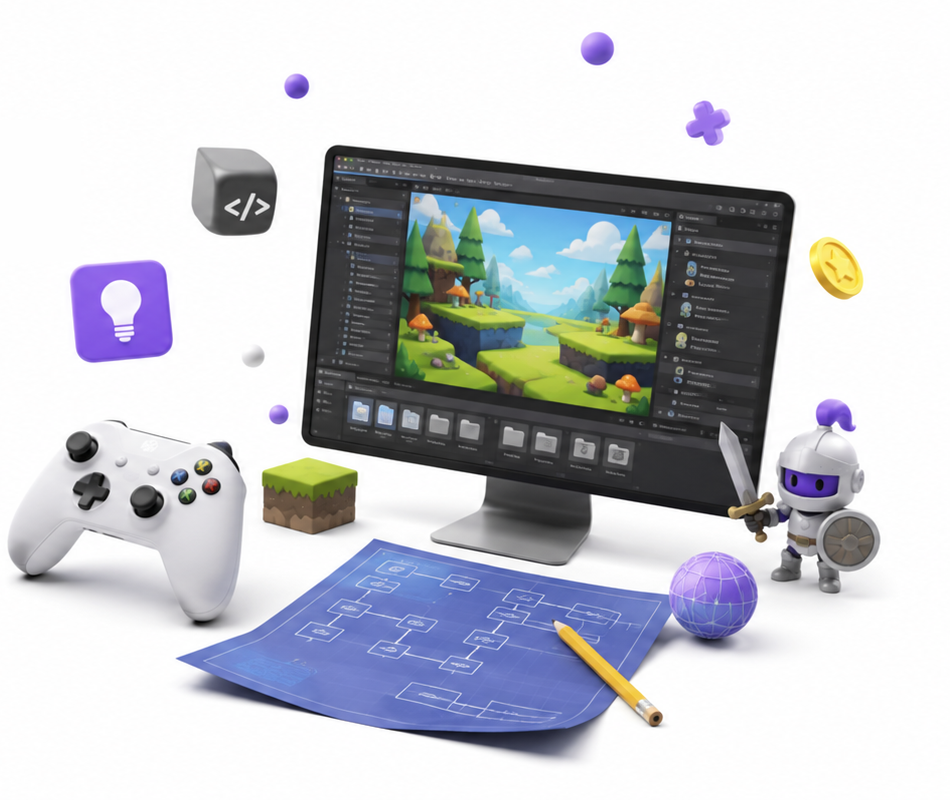

Siarhei Meliashchuk
Case Study
Bubble Associations

Bubble Associations

Привет, это Сергей.
Так я работаю со сложными задачами, это мой самый эффективный пайплайн.
Записали геймплей → AI разобрал по кадрам → проверили руками → собрали короткое ТЗ игрового продукта (блок 04 GDD Readme MD ниже). Дальше это ТЗ работает как вход для трёх вещей: генератора уровней, валидатора решаемости и playable-прототипа.
Что удалось подтвердить наблюдением
Задача этапа: найти источники безлимитного набора слов, категорий и связей между словами для генератора уровней, чтобы контент не был ограничен рамками задания (10 уровней), а масштабировался на сотни уровней с контролем качества.
Почему «безлимитно» не значит «бесконечно новое». Потолок ставит не генератор, а игрок. По замеру словарного запаса (Brysbaert et al., 2016, Frontiers in Psychology) средний 20-летний носитель американского английского знает около 42 000 лемм — при разбросе от 27 000 у нижних 5% до 52 000 у верхних, и это всего ~11 100 словарных семей. Причём запас пассивный: узнаю, если увижу. Казуальному пазлу годится только частотная, конкретная, однословная его часть — тысячи слов, не десятки тысяч. Дальше идти некуда: редкие слова убивают то самое удовольствие жанра, которое состоит в узнавании. Поэтому повторы — не изъян генератора, а необходимый источник новых уровней поздней линейки: слово переезжает в другую категорию, и знакомое слово даёт новую задачу.
Блок появится после выполнения этапа.
GDD: Word Bubble Jam (референс). Описание основного референса для прототипирования playable-версии. Источники: два геймплей-видео, разборы кадров и публичные гайды по игре (LevelSolve, Bubble Word Jam Full Level Answers, Cheat & Solution Walkthrough).
Новые правила вводим порциями (конфиг + level-design документация), чтобы ядро не приедалось.
Играбельный прототип Bubble Words. Выбери уровень сверху: эталонные и сгенерированные пакеты грузятся в тот же телефон; все уровни проверены слепым решателем.
Подход: оценка сложности и фана уровня. Каждый уровень получает две оценки по 10-балльной шкале: D (difficulty) - насколько тяжело разложить, и F (fun) - насколько интересно. Ключевой принцип: фан не равен лёгкости. Пик фана - управляемая двусмысленность: ловушки, которые заставляют усомниться, но разрешаются честно («ага!»). Спорность вне замысла убивает и фан, и честность.
D = 1 + сумма факторов (максимум 10). Структурную часть считает скрипт, семантическую - оценщик по зафиксированным якорям.